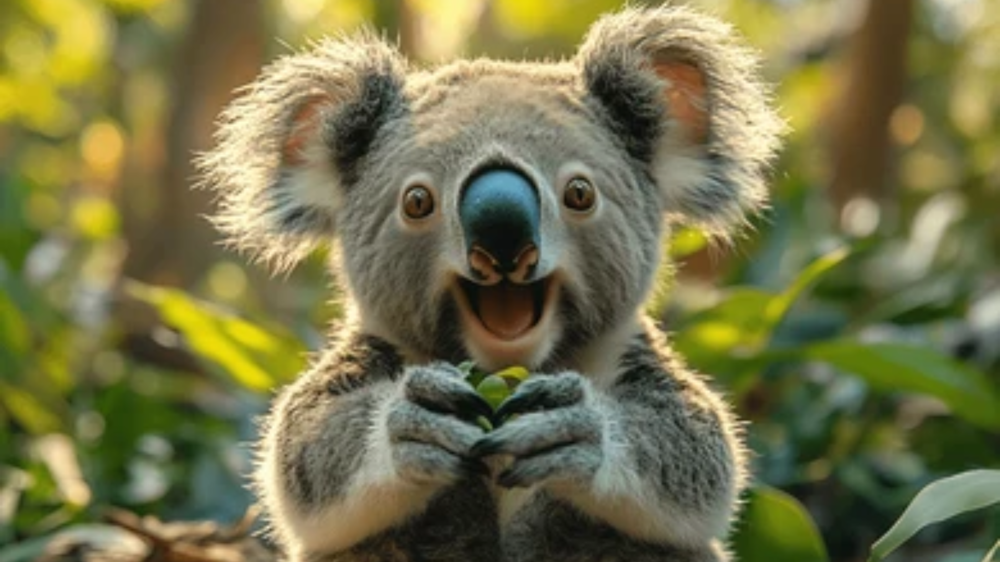
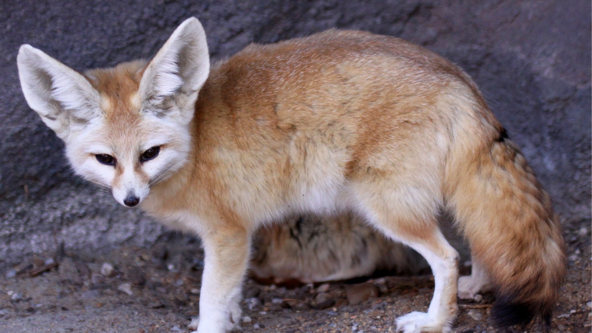

Kef çekən panda
Burdan da pandaların çox passiv, bütün gün yiyib-içib yatan olduğunu görə bilərsiz
Saytdan bayra

Şirin Koala
Bu şəkildə də yimeg tıxan koalanın şirinliyini gözləmləyə bilərsiz

Fennek Tülkisi
Bu heyrətamiz şəkildə Fennek tülküsünün birdəfəlik tülkülüyü bəlli olur. Hardan gəlir bilmirəm nəsə nito temadı
Bir dəfə daha bayra